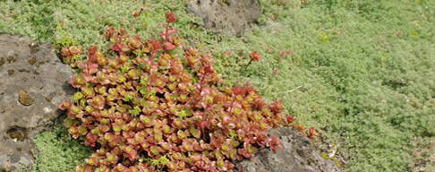

New Products featured at the Nursery
|

SERENADE BIOFUNGICIDE - GREAT NEW PRODUCT - SEE THE VIDEO
Serenade Biofungicide is made from a unique, patented strain (QST 713) of Bacillus subtilis. Farmers have used this biological pesticide for years to treat plant diseases in food crops. Bacillus subtilis penetrates and destroys the disease spores, but does not harm beneficial insects or wildlife. Get an in depth look at Serenade in action in this video.
BLACK GOLD SOIL CONDITIONER - ON SALE - BUY 2 GET ONE FREE
Black Gold Soil Conditioner Garden Amendment with Compost is the perfect solution for your garden. This organically enriched compost blend contains bat guano, bone meal, kelp and earthworm castings, along with mycorrhizea, so it's ready to jump start the microbes in your soil --- giving your plant's roots the perfect home to grow in.
EMPEROR AQUATICS SMART UV STERILIZER - FIND IT ONLY AT OUR DIVISION STORE
SMART UV Sterilizers clear pond water of algae blooms in 3-5 days guaranteed while protecting your pond against common waterborne pathogens, viruses, bacteria and protozoa for clearer, healthier water.
BACK TO TOP

This is a great time to buy Fruit Trees!
We have an excellent selection of Apples, Figs, Asian Pears, European Pears, Olives, Cherries, Plums & Persimmon – both locations have a lot to offer. Call for availability of specific varieties.

Come see our new displays!
Plants for fall color are rolling in! A rainbow of mums, festive ornamental peppers, cabbages and kales and bright Black-Eyed Susans (Rudbeckia).
The nursery really looks great this time of year. If you're feeling the doldrums of summer stop by our well-stocked stores for inspiration! We have displays of Drought-Tolerant plants, Natives, Plants for Hummingbirds, waterfall features and displays for kids!
Rethink your water-thirsty lawn |

Lawns certainly have their benefits, but they can also be water hogs, gulping down two to three times more water than other plants in the yard. A lot of water – between 30 and 50 percent – used to irrigate lawns is also often lost to evaporation, run-off, water from sprinklers hitting the sidewalk and street instead of the lawn, and over-watering.
The Regional Water Providers Consortium offers these tips to help you weigh alternatives for replacing all or part of your turf lawn with other plants that require less maintenance and water.
1. Replace lawn with alterative seed mixes
Alternative lawn seed mixes contain low-growing, drought-tolerant plant varieties that require less mowing and irrigation once established. Sometimes called “ecolawns,” these mixes combine grasses with a variety of other plants and flowers. For example, perennial ryegrass mixed with strawberry clover yarrow, English lawn daisy, Baby-blue-eyes and Roman chamomile creates a green, white, pink, and blue carpet of plant material. Micro-clover lawn is another variety. It is dark green, thick and feels good on bare feet. In the hot, dry summer months these types of alternative lawns may only need about one inch of water per month, compared to the one inch of water needed weekly by turf grass lawns. You can mow the alternative lawn about once a month to maintain a height of about three to six inches.
2. Plant groundcovers
Groundcovers come in a variety of textures and colors – some even have flowers and berries. Groundcover varieties, such as Woolly Thyme, are often called “Stepables.” These are great for planting in parking strips, between stepping stones and on paths. They feel good to walk on and don’t need to be mowed.
3. Choose shrubs and trees
Many homeowners are taking out their parking strip lawns and planting shrubs and trees, which add structure and definition to a landscape and invite birds into your yard. Once established, they generally require much less water than a lawn, and once established, don’t need much, if any, supplemental watering.
Get information about making good use of water in your landscape the Regional Water Providers Consortium’s website, www.conserveh2o.org. You can also learn more about alternatives to turf and view a slide show of water-efficient plants.
Portland Nursery Volunteers in Your Community |

Cultivating Community at the Oregon Food Bank Community Garden
Genny, a staff member at our Division St. location is currently volunteering at the Oregon Food Bank Learning Garden and has been providing snippets of her gardening experience to share with our readers! Here is her latest entry:
"What a great time of year to be in the OFB Learning Garden! It is truly the time when everyone gets to see all the magic of their hard work transformed – and this week at the garden there was magic everywhere! We started the day picking beans. I have never seen SO many beans on individual plants before! All the ladies seemed to really enjoy this task because we very quickly had a huge bucket overflowing with beans.
Then, off to the plum trees. It was a first for many of the ladies to use a fruit picker which proved to be very exciting and led to our picking several plump plums even if they weren’t quite ripe. We ended the day getting ready for fall with some trays of collard seeds. I love how the seasons just melt together in the garden; planning for fall while still smack in the middle of summer harvest sure keeps the energy pumping!"
Genny
BACK TO TOP

TREE/SHRUB PICK - Clethra - Summersweet
Summersweet really is a perfect description for Clethra. Pretty pink or white flowers smell sweet like honey and bloom in July and August when most shrubs have given up on blooming. Add to that its carefree nature and you have a perfect addition to the summer garden. Read more...
PERENNIAL PICK - Gazania - Treasure Flower
Gazanias are bold and vibrant annuals for hot spots in the garden. Since they thrive in heat and are drought tolerant they are also great in containers on the patio and other areas with radiated heat such as parking strips. Read more...
NATIVE PICK - Holodiscus - Oceanspray
A common sight between the Willamette Valley and the coast during the summer is the frothy sprays of creamy white flowers covering stands of Holodiscus discolor, interspersed along the highway. Read more... |